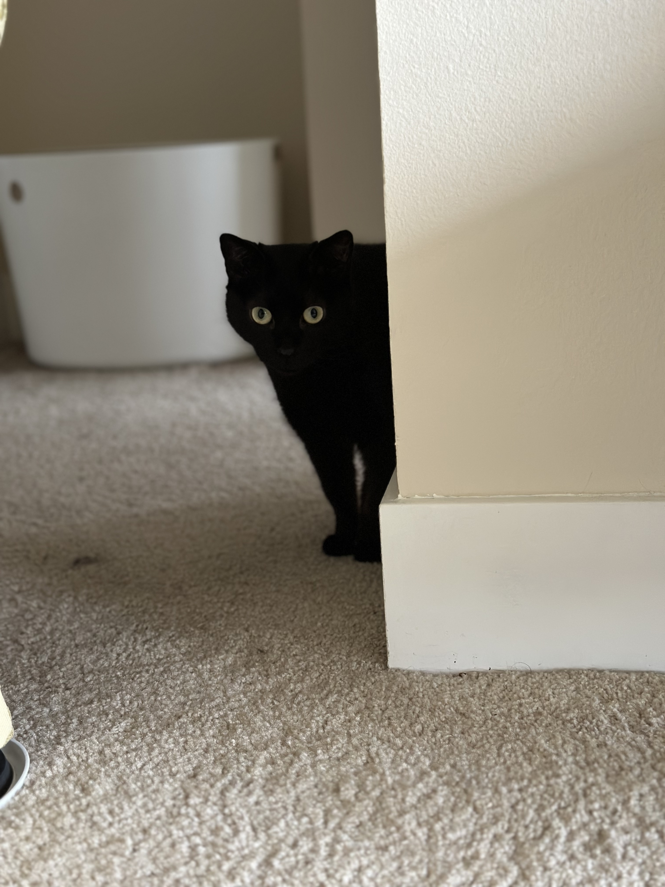

Magic Show & Speakeasy
Overview
MAGIC SHOW WITH DRINKS! Illusions and the thrill of a hidden speakeasy! I'm kind of combining two options here, one is magic shows and the other is speakeasy. There is one option that is both but its a bit expensive.
Summary
- Location: Various locations in Manhattan, NY
- Time: 2-3 hours
- Cost: ~$200 per person for the magic. Significantly less if we just go speakeasy.
- Vibe: Mysterious, enchanting, chaotic
Details
Some options (not exhaustive):
- Speakeasy Magick at The Overlook Bar "features a rotating roster of NYC's best magicians performing close-up magic in an intimate setting". It's located at 25 West 24th Street in the Flatiron District. Tickets are $180 without drinks/food so v pricy, but it gets good reviews.
- Chamber Magic by Steve Cohen at the Lotte New York Palace "offers an elegant parlor magic experience where audiences dress in cocktail attire". It's located at 455 Madison Avenue. Cheapest tickets are $175. I think I actually went to this in high school before it was super popular (#hipsterofmagic #magicclub2010). I think I'd rather do one of the other options but I do remember it being quite impressive.
- The Garret West is a casual unmarked cocktail bar hidden up a staircase in the back of Five Guys in the West Village. It looks small/chill from the pictures. The cocktails are like $20 a pop. I googled "best speakeasy in nyc" and it came up on a number of lists. There are many others if this is the desired vibe.
This option is a little underbaked. I feel like we have other bars we already want to go to, so I think the first offering is the most serious (magic + drinks) but its also pretty expensive.
Back to date list